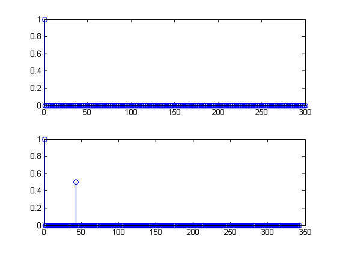
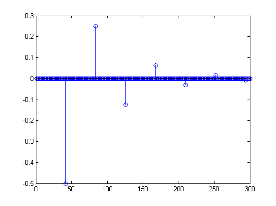
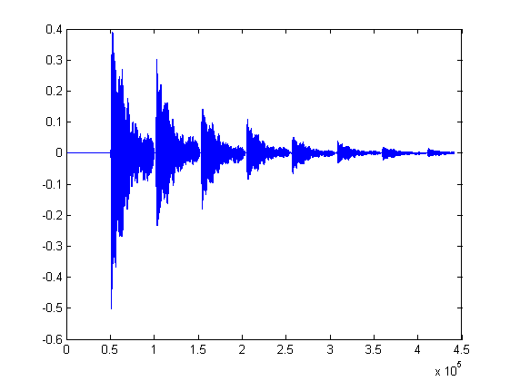

Contents
Exercício 1.i)
% y(n) = x(n) + 0.5x(n-42)
Exercício 1.ii)
% function [y] = Sistema1(x, n, a) % [l,c] = size(x); % y = zeros(l, c+n); % % for j=1:1:l % for i=1:1:c % y(j,i) = x(j,i); % end % for i = n+1:1:c+n % y(j,i) = y(j,i) + a*x(j,i-n); % end % end % end
Exercício 1.iii)
x = zeros(1, 300); x(1,1) = 1; y = Sistema1(x,42, 0.5); figure(1); subplot(2,1,1), stem(x); subplot(2,1,2), stem(y);
Exercício 1.iv)
% O SLIT da Figura 1 é um sistema FIR, pois para qualquer % input x(n) o output y(n) nunca é infinito (a não ser % que x(n) o seja), aliás o tamanho de y(n) será sempre % o tamanho de y(n) mais n (atraso).
Exercício 1.v)
load('imagem_lab3.mat');
y = Sistema1(ist_g,42,0.5);
figure(2);
subplot(1,2,1), imshow(ist_g);
subplot(1,2,2), imshow(y);
Exercício 2.i)
% s(n+1) = As(n) + Bx(n) % y(n) = Cs(n) + Dx(n) % O vector de estado contem 42 estados resultantes de cada atraso % x(n-d) com d = 1:42; A = diag(diag(eye(41),0),-1); A(1, 42) = -0.5; B = zeros(42, 1); B(1, 1) = 1; C = zeros(1, 42); C(1 ,42) = -0.5; D = 1;
Exercício 2.ii)
function [a ,y] = Actualiza_Sistema2(s, x) [l, c] = size(s);
A = diag(diag(eye(l-1),0),-1); A(1, l) = -0.5;
B = zeros(l, 1); B(1, 1) = 1;
C = zeros(1, l); C(1 ,l) = -0.5;
D = 1;
a = A*s + B*x; y = C*s + D*x;
end
Exercício 2.iii)
y = zeros(1, 300); for i = 1:300 y(i) = C*A^(i-1)*B; end figure(3), stem(y)
Exercício 2.iv)
O sistema é IIR pois a sua resposta impulsiva tem duração infinita.
Exercício 2.v)
load('imagem_lab3.mat'); [l,c] = size(ist_g); y = zeros(l, c); for j = 1:l s = zeros(42, 1); x = ist_g(j, :)'; for i = 1:c [s, y(j, i)] = Actualiza_Sistema2(s, x(i)); end end figure(4), subplot(1,2,1), imshow(ist_g); subplot(1,2,2), imshow(y);
Exercício 2.vi)
Ao início todas as imagens são iguais. No primeiro atraso a imagem aparece a preto que corresponde ao resultado da utilização da função da alínea 2-ii). A imagem resultante da utilização da funçao da alínea 1-ii) coincide com esta mas tem um tom mais claro e portanto não é visível. A partir deste primeiro atraso a função de 1-ii) nao sofre mais atrasos ao contrário da 2-ii) ficando apenas a imagem resultante desta última visível
load('imagem_lab3.mat'); figure(5) hold on; [l,c] = size(ist_g); imagem1 = Sistema1(ist_g,42,0.5); hold on; y = zeros(l, c); for j = 1:l s = zeros(42, 1); x = ist_g(j, :)'; for i = 1:c [s, y(j, i)] = Actualiza_Sistema2(s, x(i)); end end subplot(1,3,1), imshow(ist_g); subplot(1,3,2), imshow(imagem1); subplot(1,3,3), imshow(y);
Exercício 3.i)
% function [z] = Convolucao(x, y) % % len = length(x); % z = zeros(len, 1); % % for n = 1 : 1 : len % z(n) = x(n) * y(n); % end
Exercício 3.ii)
O SLIT utiliza 50 mil atrasos (3,5*10^5 unidades / 7 respostas) e tem um factor multiplicativo de aproximadamente -0,6 (analisando tanto a resposta impulsiva como o sinal sonoro).
clear;
[sinalOriginal, Fs] = wavread('som_avaliacao_t3b.wav');
sound(sinalOriginal);
figure(6), plot(sinalOriginal);
